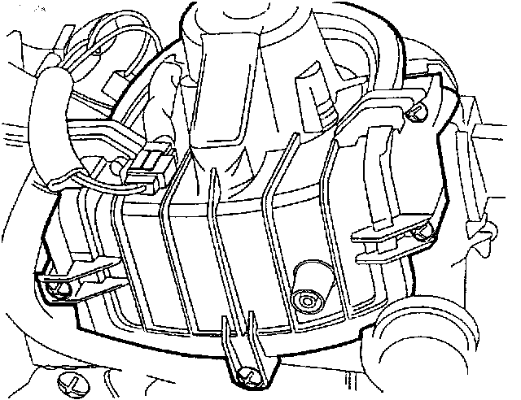

Component Locations
V2, V59, V18, V64:

Component Location View
V2:

Component View
V2 Fresh Air Blower
- In fan or evaporator housing behind instrument panel, right-side (shown from below)
V2:

Component Location View
V2:

Component View
V2 Fresh Air Blower
- In heater housing behind instrument panel, right-side (shown from below)